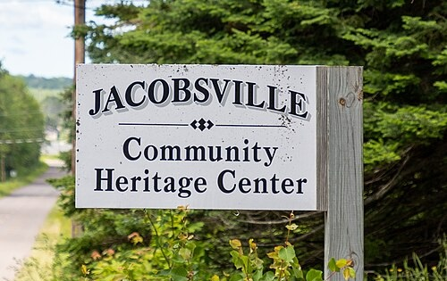

Keweenaw Peninsula · Upper Peninsula, Michigan
The Jacobsville Community Heritage Center preserves the history of the quarries, the harbor, and the families who built a town from red stone at the mouth of the Portage River.

Welcome
"Founded in 1885 on the strength of red sandstone, Jacobsville's story is still being written by the people who remember it."
Jacobsville was platted by John Henry Jacobs as a quarrying and fishing village on Lake Superior's Portage River. For decades, its sandstone shaped buildings across the Copper Country and beyond. Today, our Heritage Center gathers the photographs, records, and memories of that community — and gives the community a place to keep them alive for the next generation.
Read the full history →What's On
Tour the archive room and see this season's featured photographs from the quarry era.
Bring a dish and a memory — an evening of shared stories for neighbors and guests.
Yearly gathering to review the Center's work and plan the year ahead.